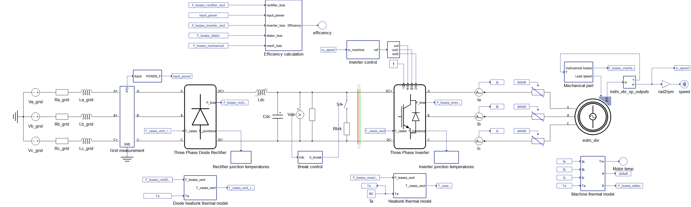
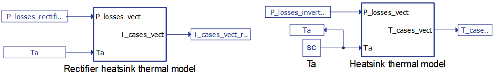
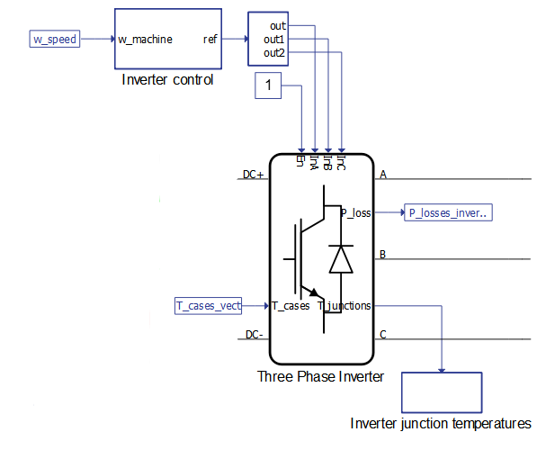
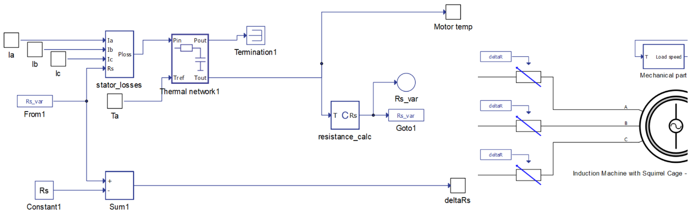
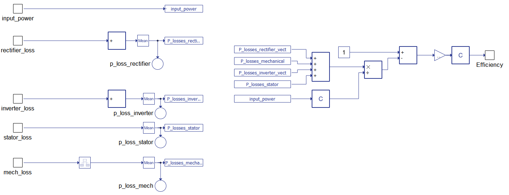
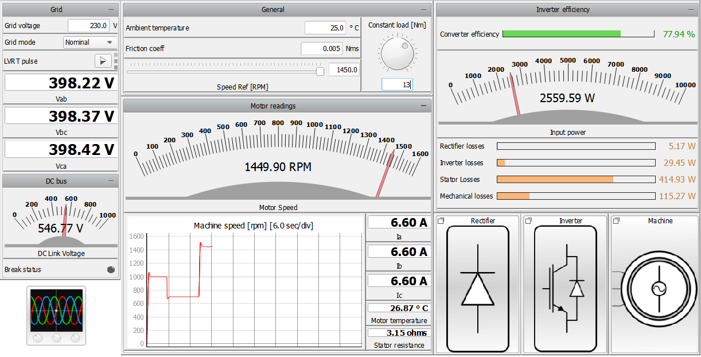
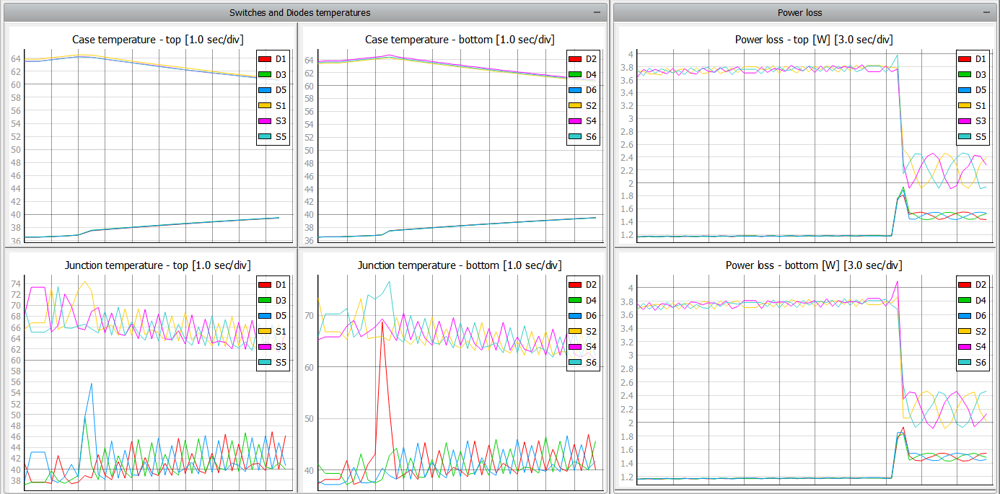

How to couple electrical and thermal models
How to guide for coupling electrical and thermal models in Typhoon HIL Schematic Editor.
Introduction
Thermal effects play an important role in electrical equipment design. Hardware designers and control engineers are not only interested in the output of independently running thermal models, but also want to close the loop with electrical models in order to include thermal effects in their designs. This application note presents two solutions for realizing electrical-thermal coupling in a variable speed drive model. The Typhoon HIL system architecture allows electrical and thermal models to be simulated in parallel in real time, regardless of the complexity of either model.
Model description
The electrical model of the variable speed drive consists of a diode rectifier, a DC link, a breaking chopper, and an inverter. The mechanical load from the induction motor is model-based, and is implemented in the Mechanical part subsystem. The induction motor is modelled as “voltage behind reactance”, which provides better numerical stability.

The thermal model consists of the inverter (heatsink) thermal model, rectifier (heatsink) thermal model (Figure 2) and the machine thermal model (Figure 4). In the context of real-time simulation, thermal processes can be classified as “slow” processes. Therefore, all thermal models are implemented using Signal Processing elements through the Thermal network component. The thermal network in the heatsink model of both the rectifier and the inverter is based on the Cauer thermal model, while the thermal model of the inverter and the rectifier is based on the Foster thermal model. The machine thermal model is based on the Cauer model.

The ambient temperature (Ta) is an input in both models and it plays an important role in the performance of both the inverter and the motor, as shown in the simulation.
The electrical-thermal coupling between the inverter or the rectifier and their respective thermal model requires loss calculation to be enabled in the converter’s properties. Doing so enables one additional input (the cases temperature) and two outputs (power losses and temperature of the junctions) the inverter or rectifier component, as shown in Figure 3. Parameters for loss calculation are imported automatically for the inverter from an XML file, while for the rectifier, they are imported manually (a video tutorial on manual import is available at this link). The power loss vector P_losses is fed to the Heatsink thermal model and factored into the drive efficiency calculation.

The idea behind the machine thermal model is to demonstrate the effects of temperature on the stator resistance and to calculate the stator losses of the machine. The model takes the stator currents along with ambient temperature and outputs motor temperature as well as changes in the stator resistance deltaRs. The electrical-thermal coupling is achieved by using variable resistors, a.k.a Time Varying Elements (TVE), at stator terminals that are directly controlled by deltaRs (Figure 4).

As there are three variable resistors for each stator phase, the compiler console reports “TVE solvers utilization: 3 out of 16” for the processing core where the TVE are located. Other key resources being utilized by this model are listed in the Example requirements.

The model also includes an algorithm that calculates efficiency for the whole drive. It takes into account input power, power lost at the rectifier, power lost at the inverter, power lost in the stator of the machine, and mechanical losses. Based on these inputs, algorithm outputs the efficiency of the whole drive system.
Simulation
This application comes with a pre-built SCADA panel (Figure 6). The panel offers most essential user interface elements (widgets) to monitor and interact with the simulation in runtime. You can customize it freely to fit your needs.

When the simulation starts, the default operation ambient temperature is 25°C. During simulation, multiple speed references were provided which impact the losses and overall efficiency of the drive, which can be observed on the right part of Figure 6.
If you want to observe diodes, switches, or junction temperatures or to observe the power losses trend, you can do so by opening the dedicated sub-panel shown in bottom-right part of Figure 6. In addition, in the Machine sub-panel you can observe the trend of mechanical losses, motor temperature, and stator resistance.
For example, you can take a look at Figure 7, which contains temperature trends and power losses during operation. At one point, the speed reference and torque is reduced, which impacts the temperatures and power losses of the cases and junctions and power lost on them as well. Keep in mind that this high resolution of temperatures has been achieved due to the fact that streaming signals are used.

Test automation
We don’t have a test automation for this example yet. Let us know if you wish to contribute and we will gladly have you signed on the application note!
Example requirements
Table 1 provides detailed information about the file locations and hardware requirements for running the model in real-time, followed by the HIL device resource utilization when running the model using this minimal hardware configuration. This information is provided to help you with running and customizing the model as you see fit.
| Files | |
|---|---|
| Typhoon HIL files | examples\models\electrical drives\indm losses calculation and thermal model indm losses calculation and thermal model.tse indm losses calculation and thermal model.cus IGP15N60T_Diode.xml IGP15N60T_IGBT.xml |
| Minimum hardware requirements | |
| No. of HIL devices | 1 |
| HIL device model | HIL402 |
| Device configuration | 4* |
| HIL device resource utilization | |
| No. of processing cores | 1 |
| Max. matrix memory utilization | 59.18% |
| Max. time slot utilization | 60.62% |
| Simulation step, electrical | 1 µs |
| Execution rate, signal processing | Multirate (100 µs, 200 µs) |
*This model makes use of variable resistors. Make sure you select a HIL device configuration that supports “Time varying elements”. By default, a HIL402 with configuration 4 is selected in order to accommodate both variable resistors and the machine solver.
Authors
[1] Ognjen Gagrica